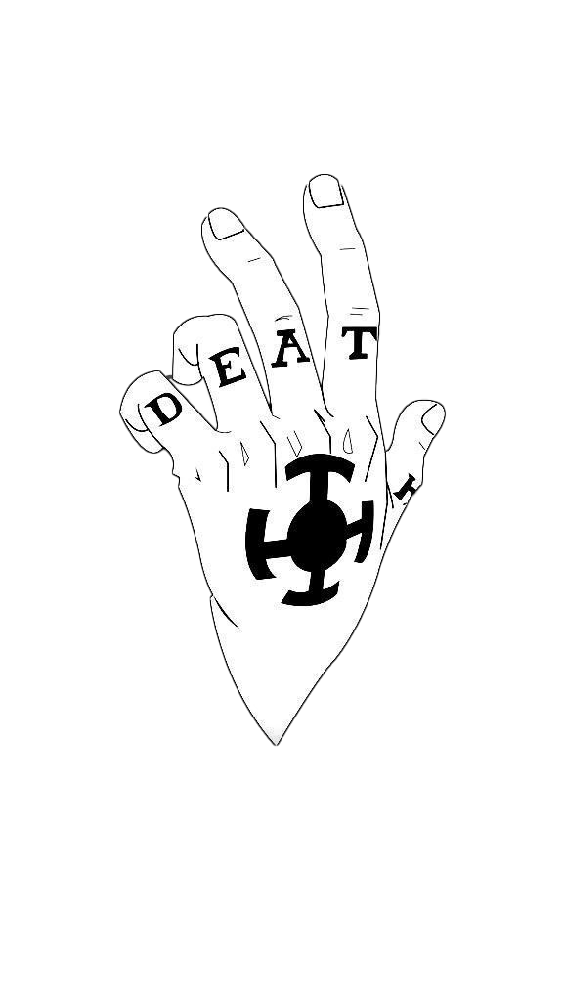

Watchparty · No. 001

LOOOM
Gemeinsam schauen, ohne Kompromisse.
P2P
No Backend
No Tracking
No Ads
Modus 01
Eigenes Video
Lade eine MP4-, WebM- oder MOV-Datei hoch. Der Clip wird direkt an deine Gäste gestreamt.
- Peer-to-peer
- bis ~2 GB
- keine Speicherung
Modus 02
Link teilen
Füge einen Video-Link ein. Der Player läuft bei jedem lokal — in voller Qualität. YouTube und Vimeo laufen synchron, der Rest ohne Sync aber mit Chat und Kommentar-Markern.
- YouTube · Vimeo
- Loom · Twitch · Dailymotion
- Streamable · Wistia · Drive
- MP4 / WebM / MOV
LOOOM ist eine lokal gehostete Watchparty — keine Werbung, keine Accounts, kein Umweg über Teams. Lade dein eigenes Video hoch oder teile einen YouTube- oder Vimeo-Link. Alle sehen dasselbe, gleichzeitig, in voller Qualität.
Kommentar